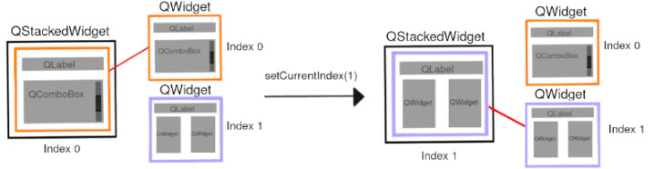
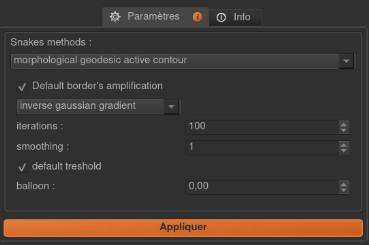
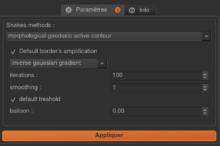

Interactive plugin
In this tutorial, we will see how to implement a plugin managing user interaction through graphics objects input. We will illustrate this through the implementation of active contour algorithms from scikit-image library :
Active contour algorithms, also called «snakes», are segmentation methods matching a deformable model to an image region by means of energy minimization. They require initial regions or seeds in the form of a binary mask from which an iterative update strategy will be applied (growth or shrinkage). Initial binary mask can be either the result of a previous task in workflow or manual shapes drawn by users (Ikomia graphics objects).
Here are the steps we will follow:
Define required inputs and outputs
Get initial contour from user graphics input or binary mask directly
Call active contour method
Generate results
We skip here all steps to create a new empty plugin. Please refer to Hello World tutorial if you are not familiar with it.
Table of contents
Plugin files structure
skimage_morpho_snakes
__init__.py
requirements.txt
skimage_morpho_snakes.py
skimage_morpho_snakes_process.py
skimage_morpho_snakes_widget.py
Dependencies
OpenCV: basic image operations (built-in in Ikomia software)
scikit-image: active contour algorithms
Plugin dependencies are listed in requirements.txt so that they will be automatically installed by Ikomia software during plugin installation. More information about dependency management here.
Interface implementation
No features added from the default implementation. See skimage_morpho_snakes.py.
Process implementation
Import statements in skimage_morpho_snakes_process.py:
from ikomia import core, dataprocess
import copy
# your imports below
import cv2
from skimage.segmentation import (morphological_geodesic_active_contour, inverse_gaussian_gradient, morphological_chan_vese)
from skimage import img_as_float
import numpy as np
Inputs
Our active contour methods are designed to process 2D images, the corresponding base class from which our
scikit_MorphoSnakesProcess class inherits is C2dImageTask. It comes with built-in inputs :
Source image (
CImageIO)Graphics (
CGraphicsInput)
As we discuss earlier, seeds for active contour methods can be set from graphics (user input) or binary mask directly.
So we need to add a new image-based input of type CImageIO to handle binary mask initialization.
class MorphoSnakes(dataprocess.C2dImageTask):
def __init__(self, name, param):
dataprocess.C2dImageTask.__init__(self, name)
...
# add input -> initial level set
self.addInput(dataprocess.CImageIO())
...
Outputs
Here are outputs that our plugin should returned:
Final level set as binary mask representing segmented objects (
C2dImageTask): directly consummable by connected tasks in workflow.Image with overlay containing segmented objects displayed on top of the original image (
C2dImageTask): for visualization purpose.
C2dImageTask-based class comes also with built-in output:
Image (
CImageIO)
So we need to add a new image-based output of type CImageIO.
class MorphoSnakes(dataprocess.C2dImageTask):
def __init__(self, name, param):
dataprocess.C2dImageTask.__init__(self, name)
...
# add output -> results image
self.addOutput(dataprocess.CImageIO())
...
Active contour methods
First, we should check the input type the user gives us for the initial level set. User can give us 2 types of input to define initial contour:
Binary mask
Graphics objects
If both of them are given, we have to make an arbitrary choice, so we will process the binary image first. Otherwise we will process graphics input. Let’s implement that in the run() function:
def run(self):
...
# initial level set
initlevelSetInput = self.getInput(2)
if initlevelSetInput.isDataAvailable():
# input set by previous operation in worflow
...
else :
# input set by user
graphInput = self.getInput(1)
if graphInput.isDataAvailable():
...
else:
raise Exception("No initial level-set given: it must be graphics input or binary image.")
...
In the case of binary mask input, no extra code is needed and we just have to pass the input content to the scikit-image functions as both structures are numpy arrays.
def run(self):
...
if initlevelSetInput.isDataAvailable():
initlevelSetBinary = initlevelSetInput.getImage()
if param.method == "mgac":
proc_img = morphological_geodesic_active_contour(gimage, 100, init_level_set=initlevelSetBinary)
else:
proc_img = morphological_chan_vese(gimage, 100, init_level_set=initlevelSetBinary)
...
For graphics input, we need to generate a binary mask representing active contour seeds from graphics drawn by users.
We will use 2 methods of C2dImageTask to achieve that:
createGraphicsMask(): create a binary mask fromCGraphicsInputand append it to the internal mask list.getGraphicsMask(): get a mask from the internal mask list as numpy array.
def run(self):
...
if graphInput.isDataAvailable():
self.createGraphicsMask(imagef.shape[1], imagef.shape[0], graphInput)
binImg = self.getGraphicsMask(0)
...
proc_img = morphological_geodesic_active_contour(gimage, 100, init_level_set=binImg, ...)
...
proc_img = morphological_chan_vese(gimage, 100, init_level_set=binImg, ...)
...
The following example illustrates the use of user graphics input to define initial level set:

Results
The first result is the binary mask representing the final level set of the active contour method. We simply have to set the content of the corresponding output with the numpy array returned by the scikit-image functions.
# Get output
output = self.getOutput(0)
# set output mask binary image
output.setImage(proc_img)
The second result is the visualization of the segmented objects on top of the original image. We will use the color mask visualization offered by Ikomia software. This feature enables to take an output mask (binary or grayscale image) and use it as color mask for another image output. Ikomia software will then display the mask in a transparent overlay on top of this image. Colors are fully customizable, you can set a single color for binary mask or a complete colormap for grayscale mask.
In our example, we want to display the final level set on top of the original image, so we need
to forward the original input to a given output (see forwardInputImage()):
self.forwardInputImage(0, 1)
And we apply the color mask vizualisation in red (see setOutputColorMap()):
self.setOutputColorMap(1, 0, [[255,0,0]])
Progress bar
Note that functions morphological_geodesic_active_contour() and morphological_chan_vese() from scikit-image
have one specificity that can be usefull for us. They have an iter_callback parameter called once per iteration
we can use to refresh the progress bar of Ikomia software. We call emitStepProgress()
in a lambda function given to iter_callback parameter:
proc_img = morphological_geodesic_active_contour(..., iter_callback=(lambda callback: self.emitStepProgress())
We also need to specify the number of iterations (steps) to our progress bar by overriding
getProgressSteps():
class MorphoSnakes(dataprocess.C2dImageTask):
def getProgressSteps(self, eltCount=1):
param = self.getParam()
if param.method == "mgac":
nb_iter = param.mgac_iterations
else :
nb_iter = param.mcv_iterations
return nb_iter
Process parameters
We will now focus on adding some parameters to our process. We want to control available parameters from scikit-image methods.
Morphological active contour:
gImage : (M, N) or (L, M, N) array, preprocessed image or volume to be segmented.
iterations : uint, number of iterations to run.
init_level_set : (M, N) array, or (L, M, N) array
smoothing : uint, optional, number of time the smoothing operator is applied per iteration.
threshold : float, optional, areas of the image with a value smaller than this threshold will be considered borders.
balloon : float, optional, force to guide the contour, positive value → expand the contour / negative value → shrink the contour.
iter_callback : function called once per iteration, optional
Morphological Chan Vese:
gImage : (M, N) or (L, M, N) array, preprocessed image or volume to be segmented.
iterations : uint, number of iterations to run.
init_level_set : (M, N) array, or (L, M, N) array
smoothing : uint, optional, number of time the smoothing operator is applied per iteration.
lamnda1 : float, optional, weight parameter for the outer region.
lamnda2 : float, optional,weight parameter for the inner region.
iter_callback : function called once per iteration, optional
First, we add member variables in the parameters class, they will be accessible from the process.
Note the presence of functions setParamMap() and
getParamMap() which are required to save/load values when user wants to save his workflow.
class MorphoSnakesParam(core.CWorkflowTaskParam):
def __init__(self):
core.CWorkflowTaskParam.__init__(self)
# parameters
self.method = "mgac"
self.mgac_amplification_contour = "Inverse gaussian gradient"
self.mgac_iterations = 100
self.mgac_smoothing = 1
self.mgac_threshold = 'auto'
self.mgac_balloon = 0
self.mcv_iterations = 100
self.mcv_smoothing = 1
self.mcv_lambda1 = 1
self.mcv_lambda2 = 1
def setParamMap(self, paramMap):
# Set parameters values from Ikomia application
self.method = int(paramMap["method"])
self.mgac_amplification_contour = int(paramMap["mgac_amplification_contour"])
self.mgac_iterations = int(paramMap["mgac_iterations"])
self.mgac_smoothing = int(paramMap["mgac_smoothing"])
self.mgac_threshold = int(paramMap["mgac_threshold"])
self.mgac_balloon = int(paramMap["mgac_balloon"])
self.mcv_iterations = int(paramMap["mcv_iterations"])
self.mcv_smoothing = int(paramMap["mcv_smoothing"])
self.mcv_lambda1 = int(paramMap["mcv_lambda1"])
self.mcv_lambda2 = int(paramMap["mcv_lambda2"])
def getParamMap(self):
# Send parameters values to Ikomia application
# Create the specific dict structure (string container)
paramMap = core.ParamMap()
paramMap["method"] = str(self.method)
paramMap["mgac_amplification_contour"] = str(self.mgac_amplification_contour)
paramMap["mgac_iterations"] = str(self.mgac_iterations)
paramMap["mgac_smoothing"] = str(self.mgac_smoothing)
paramMap["mgac_threshold"] = str(self.mgac_threshold)
paramMap["mgac_balloon"] = str(self.mgac_balloon)
paramMap["mcv_iterations"] = str(self.mcv_iterations)
paramMap["mcv_smoothing"] = str(self.mcv_smoothing)
paramMap["mcv_lambda1"] = str(self.mcv_lambda1)
paramMap["mcv_lambda2"] = str(self.mcv_lambda2)
return paramMap
We now modify the run() method to give parameters to our function:
class MorphoSnakes(dataprocess.C2dImageTask):
def run(self):
...
# Get parameters
param = self.getParam()
...
proc_img = morphological_geodesic_active_contour(
gimage,
param.mgac_iterations,
init_level_set=initlevelSetBinary,
smoothing=param.mgac_smoothing,
threshold=param.mgac_threshold,
balloon=param.mgac_balloon,
iter_callback=(lambda callback: self.emitStepProgress())).astype(np.uint8) * 255
Process widget
At this point, parameters are only available from source code. The role of the plugin widget is to open parameters configuration to the user. We will use PyQt framework for this example. We implement the widget part in the file skimage_morpho_snakes_widget.py. The widget layout is created in the constructor. Like the process class, the constructor receives an instance of the parameters structure to initialize the widget components.
We let the user choose the active contour method, so we need him to select the method in order to display the appropriate parameters. We will use the QStackedWidget component.
Global widget initialization
class MorphoSnakesWidget(core.CWorkflowTaskWidget):
def __init__(self, param, parent):
# Create layout : QGridLayout by default
self.gridLayout = QGridLayout()
# snake methods available
self.mgac = QWidget()
self.chanVese = QWidget()
# set all parameters widgets
self.methodWidget()
self.mgacWidget()
self.chanVeseWidget()
# main widget
self.stack = QStackedWidget()
self.stack.addWidget(self.mgac)
self.stack.addWidget(self.chanVese)
self.gridLayout.addWidget(self.stack, 2, 0)
self.gridLayout.setRowStretch(3,3)
# PyQt -> Qt wrapping
layoutPtr = qtconversion.PyQtToQt(self.gridLayout)
# Set widget layout
self.setLayout(layoutPtr)
# update left parameter panel
if self.parameters.method != "mgac":
self.comboMethod.setCurrentIndex(1)
Note: self.gridLayout.setRowStretch(n, n) forces items to stay on top of the gridlayout.
Method selection:
class MorphoSnakesWidget(core.CWorkflowTaskWidget):
...
def methodWidget(self):
label_method = QLabel("Methods :")
self.comboMethod = QComboBox()
self.comboMethod.addItem("Morphological Geodesic Active Contour")
self.comboMethod.addItem("Morphological Chan Vese")
self.comboMethod.currentIndexChanged.connect(self.OnMethodChange)
self.gridLayout.setRowStretch(0,0)
self.gridLayout.addWidget(label_method, 0, 0)
self.gridLayout.setRowStretch(1,1)
self.gridLayout.addWidget(self.comboMethod, 1, 0)
self.gridLayout.setRowStretch(2,2)
MGAC method parameters (see source code for details)
class MorphoSnakesWidget(core.CWorkflowTaskWidget):
def mgacWidget(self):
...
Chan Vese method parameters (see source code for details)
class MorphoSnakesWidget(core.CWorkflowTaskWidget):
def chanVeseWidget(self):
...
We use the slot self.OnMethodChange() to change current index of our QStackWidget according to the selected method.
class MorphoSnakesWidget(core.CWorkflowTaskWidget):
#pySlot
def OnMethodChange(self):
if self.comboMethod.currentText() == "Morphological Geodesic Active Contour":
self.stack.setCurrentIndex(0)
else :
self.stack.setCurrentIndex(1)
Let’s see how our widget looks:
 

{kind=link}
Last thing, we have to update process parameters when a user change values through the widget. We do that by overriding onApply() method which is called when user clicks the Apply button.
class MorphoSnakesWidget(core.CWorkflowTaskWidget):
def onApply(self):
# Apply button clicked slot
if self.comboMethod.currentText() == "Morphological Geodesic Active Contour":
self.parameters.method = "mgac"
if self.mgac_coutour_check.isChecked():
self.parameters.mgac_amplification_contour = self.mgac_stack_comboContour.currentText()
else :
self.parameters.mgac_amplification_contour = None
self.parameters.mgac_iterations = self.mgac_spin_iterations.value()
self.parameters.mgac_smoothing = self.mgac_spin_smooth.value()
if self.mgac_threshold_check.isChecked():
self.parameters.mgac_threshold = 'auto'
else :
self.parameters.mgac_threshold = self.mgac_spin_threshold.value()
self.parameters.mgac_balloon = self.mgac_spin_balloon.value()
else :
self.parameters.method = "mcv"
self.parameters.mcv_iterations = self.mcv_spin_iterations.value()
self.parameters.mcv_smoothing = self.mcv_spin_smooth.value()
self.parameters.mcv_lambda1 = self.mcv_spin_lambda1.value()
self.parameters.mcv_lambda2 = self.mcv_spin_lambda2.value()
# Send signal to launch the process
self.emitApply(self.parameters)
Process metadata
Finally, we will add some useful information about our plugin. Ikomia software manages such information and
display it to the user (parameters widget, Ikomia Apps). Metadata can be added in the constructor of the process
factory class in skimage_morpho_snakes_process.py. We have to fill the member object info,
see CTaskInfo for details.
Our plugin is now fully functional and interactive !